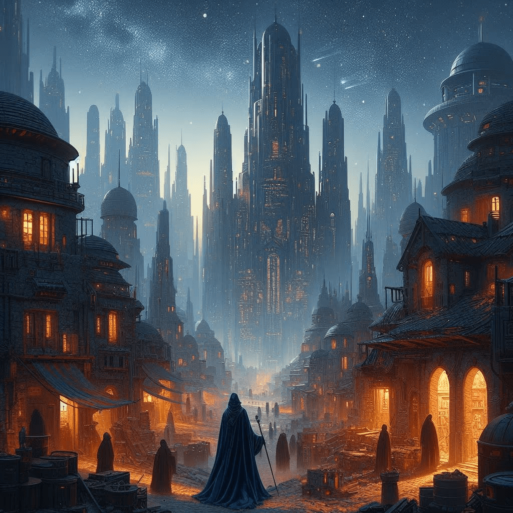

Lumaria
Quelle: P6
In den entlegenen Winkeln des Outer Rim liegt die vergessene Stadt Lumaria. Einst ein florierendes Handelszentrum, ist sie nun ein Zufluchtsort für Schmuggler und Abenteurer. Über den staubigen Gassen erhebt sich der majestätische Turm des kaiserlichen Palastes. Eines Abends betritt ein mysteriöser Fremder die Stadt, gekleidet in tiefblauen Samt. Er spricht von einem alten Artefakt, tief unter den Ruinen Lumarias verborgen, das die Machtverhältnisse der Galaxie verändern könnte. Er möchte mit dir nach dem Artefakt suchen, da die Mission nach seinen Angaben nur zu zweit möglich sei. Er verspricht dir 10.000 Credits, wenn du ihn begleitest und ihm bei der Suche nach dem Artefakt unterstützt. Du machst dir wenig Gedanken, denn in Lumaria, wo die Sterne flüstern, beginnt jedes Abenteuer mit einem einzigen Schritt ins Ungewisse. Begleite den Fremden auf seiner Suche nach dem Artefakt. Vielleicht solltest du im Palast beginnen.